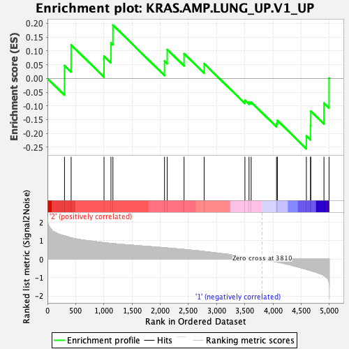
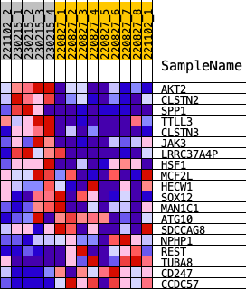
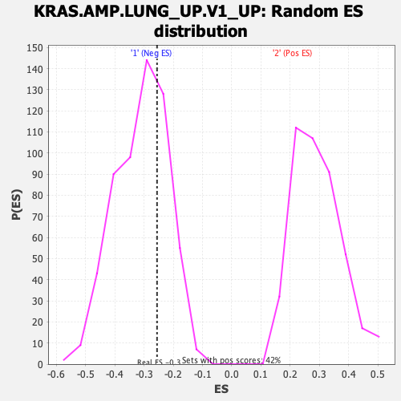

| | | Dataset | norm_counts_forGSEA.Phenotype.cls#2_versus_1.Phenotype.cls#2_versus_1_repos |
| Phenotype | Phenotype.cls#2_versus_1_repos |
| Upregulated in class | 1 |
| GeneSet | KRAS.AMP.LUNG_UP.V1_UP |
| Enrichment Score (ES) | -0.25568113 |
| Normalized Enrichment Score (NES) | -0.82363564 |
| Nominal p-value | 0.7048611 |
| FDR q-value | 1.0 |
| FWER p-Value | 0.999 |
Table: GSEA Results Summary

Fig 1: Enrichment plot: KRAS.AMP.LUNG_UP.V1_UP
Profile of the Running ES Score & Positions of GeneSet Members on the Rank Ordered List

Fig 2: KRAS.AMP.LUNG_UP.V1_UP
Blue-Pink O' Gram in the Space of the Analyzed GeneSet

Fig 3: KRAS.AMP.LUNG_UP.V1_UP: Random ES distribution
Gene set null distribution of ES for KRAS.AMP.LUNG_UP.V1_UP